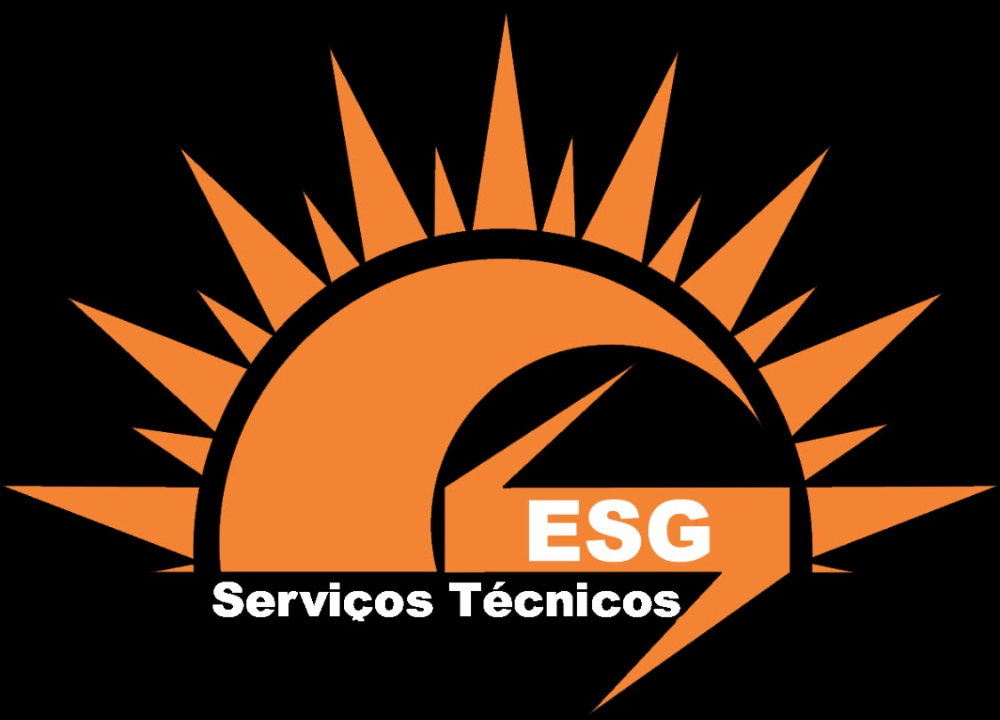
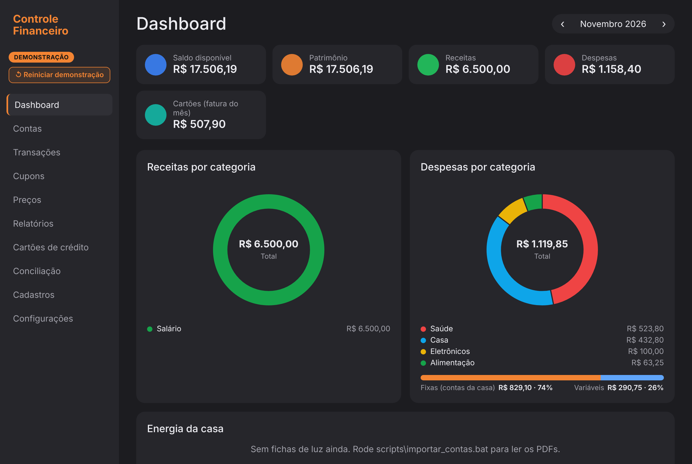
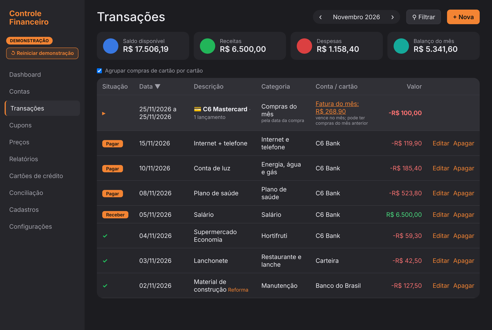

<title>Controle Financeiro</title>
<meta name="claude:viewport-fit-sides" content="cover">
<style>
  /* Layout: landing de uma coluna — herói, recursos com telas reais, download, rodapé ESG.
     Paleta ESG (laranja sobre fundo quente claro), com tema escuro espelhado e botão de troca. */
  :root {
    --bg: #F4F2EF; --surface: #ffffff; --surface-2: #faf7f2;
    --ink: #1c1813; --muted: #6c6358; --line: #e6ddd0;
    --accent: #F38433; --accent-strong: #C25A12; --on-accent: #1a1206;
    --sombra: 0 10px 30px rgba(28,24,19,.10);
    --fonte-tit: "Sora", system-ui, sans-serif;
    --fonte-txt: "IBM Plex Sans", system-ui, sans-serif;
    color-scheme: light;
  }
  @media (prefers-color-scheme: dark) {
    :root:not([data-theme="light"]) {
      --bg: #16130e; --surface: #211c15; --surface-2: #1b1710;
      --ink: #f3eee6; --muted: #b3a995; --line: #342c20;
      --accent: #F38433; --accent-strong: #f0a35e; --on-accent: #1a1206;
      --sombra: 0 10px 30px rgba(0,0,0,.45);
      color-scheme: dark;
    }
  }
  :root[data-theme="dark"] {
    --bg: #16130e; --surface: #211c15; --surface-2: #1b1710;
    --ink: #f3eee6; --muted: #b3a995; --line: #342c20;
    --accent: #F38433; --accent-strong: #f0a35e; --on-accent: #1a1206;
    --sombra: 0 10px 30px rgba(0,0,0,.45);
    color-scheme: dark;
  }

  * { box-sizing: border-box; }
  body { background: var(--bg); color: var(--ink); font-family: var(--fonte-txt); line-height: 1.6; }
  h1, h2, h3 { font-family: var(--fonte-tit); line-height: 1.1; text-wrap: balance; margin: 0; }
  p { margin: 0; }
  a { color: var(--accent-strong); }
  .env { padding-left: max(16px, env(safe-area-inset-left, 0px)); padding-right: max(16px, env(safe-area-inset-right, 0px)); }
  .wrap { max-width: 1080px; margin: 0 auto; }

  /* Cabeçalho fixo */
  header.topo { position: sticky; top: env(safe-area-inset-top, 0px); z-index: 20;
    background: color-mix(in srgb, var(--bg) 88%, transparent); backdrop-filter: blur(8px);
    border-bottom: 1px solid var(--line); }
  body::before { content: ""; position: fixed; inset: 0 0 auto; height: env(safe-area-inset-top, 0px);
    background: var(--bg); z-index: 21; }
  .topo .wrap { display: flex; align-items: center; gap: 16px; padding-block: 10px; }
  .topo .marca { display: flex; align-items: center; gap: 10px; font-family: var(--fonte-tit); font-weight: 700; font-size: 17px; }
  .topo .marca img { height: 30px; width: auto; }
  .topo nav { margin-left: auto; display: flex; align-items: center; gap: 4px; }
  .topo nav a { color: var(--muted); text-decoration: none; padding: 8px 12px; border-radius: 8px; font-weight: 500; font-size: 15px; }
  .topo nav a:hover { color: var(--ink); background: var(--surface-2); }
  .toggle { border: 1px solid var(--line); background: var(--surface); color: var(--ink);
    width: 38px; height: 38px; border-radius: 10px; cursor: pointer; font-size: 17px; display: grid; place-items: center; }
  .toggle:hover { border-color: var(--accent); }
  @media (max-width: 680px) { .topo nav a.oculta-mob { display: none; } }

  .btn { display: inline-flex; align-items: center; gap: 8px; font-weight: 600; font-family: var(--fonte-txt);
    border-radius: 12px; padding: 13px 22px; text-decoration: none; cursor: pointer; font-size: 16px; border: 1px solid transparent; }
  .btn-primario { background: var(--accent); color: var(--on-accent); box-shadow: var(--sombra); }
  .btn-primario:hover { background: var(--accent-strong); color: #fff; }
  .btn-secundario { background: var(--surface); color: var(--ink); border-color: var(--line); }
  .btn-secundario:hover { border-color: var(--accent); }

  /* Herói */
  .heroi { padding-block: 64px 48px; text-align: center; }
  .heroi .logo { height: 128px; width: auto; margin-bottom: 24px; filter: drop-shadow(0 8px 24px rgba(243,132,51,.25)); }
  .heroi h1 { font-size: clamp(38px, 7vw, 68px); font-weight: 800; letter-spacing: -.02em; }
  .heroi .sub { color: var(--muted); font-size: clamp(17px, 2.4vw, 21px); max-width: 620px; margin: 18px auto 0; }
  .heroi .ctas { display: flex; gap: 12px; justify-content: center; flex-wrap: wrap; margin-top: 30px; }
  .heroi .nota { color: var(--muted); font-size: 14px; margin-top: 16px; }

  /* Faixa de atributos */
  .selos { display: flex; gap: 10px 28px; justify-content: center; flex-wrap: wrap; padding-bottom: 20px; color: var(--muted); font-weight: 500; }
  .selos span { display: inline-flex; align-items: center; gap: 8px; }
  .selos b { color: var(--accent-strong); }

  /* Seções */
  section.bloco { padding-block: 56px; }
  .eyebrow { text-transform: uppercase; letter-spacing: .14em; font-size: 13px; font-weight: 600; color: var(--accent-strong); }
  .bloco h2 { font-size: clamp(26px, 4vw, 38px); font-weight: 700; margin-top: 8px; letter-spacing: -.01em; }
  .bloco .intro { color: var(--muted); max-width: 640px; margin-top: 12px; font-size: 17px; }

  .recursos { display: grid; grid-template-columns: repeat(3, 1fr); gap: 16px; margin-top: 32px; }
  @media (max-width: 820px) { .recursos { grid-template-columns: 1fr 1fr; } }
  @media (max-width: 520px) { .recursos { grid-template-columns: 1fr; } }
  .card { background: var(--surface); border: 1px solid var(--line); border-radius: 16px; padding: 22px; min-width: 0; }
  .card .ic { width: 42px; height: 42px; border-radius: 11px; background: color-mix(in srgb, var(--accent) 18%, transparent);
    display: grid; place-items: center; font-size: 22px; margin-bottom: 14px; }
  .card h3 { font-size: 18px; font-weight: 700; }
  .card p { color: var(--muted); font-size: 15px; margin-top: 7px; }

  /* Telas */
  .telas { display: grid; grid-template-columns: 1fr 1fr; gap: 20px; margin-top: 32px; align-items: center; }
  @media (max-width: 760px) { .telas { grid-template-columns: 1fr; } }
  .telas figure { margin: 0; }
  .telas img { width: 100%; height: auto; border-radius: 14px; border: 1px solid var(--line); box-shadow: var(--sombra); display: block; }
  .telas figcaption { color: var(--muted); font-size: 14px; margin-top: 10px; text-align: center; }

  /* Passos de download */
  .passos { display: grid; grid-template-columns: repeat(3, 1fr); gap: 16px; margin-top: 32px; counter-reset: p; }
  @media (max-width: 720px) { .passos { grid-template-columns: 1fr; } }
  .passo { background: var(--surface-2); border: 1px solid var(--line); border-radius: 16px; padding: 22px; }
  .passo .n { width: 34px; height: 34px; border-radius: 50%; background: var(--accent); color: var(--on-accent);
    font-family: var(--fonte-tit); font-weight: 700; display: grid; place-items: center; margin-bottom: 12px; }
  .passo h3 { font-size: 17px; }
  .passo p { color: var(--muted); font-size: 15px; margin-top: 6px; }

  .baixar-cards { display: grid; grid-template-columns: 1fr 1fr; gap: 16px; margin-top: 28px; }
  @media (max-width: 640px) { .baixar-cards { grid-template-columns: 1fr; } }
  .bx { background: var(--surface); border: 1px solid var(--line); border-radius: 16px; padding: 24px; display: flex; flex-direction: column; gap: 12px; }
  .bx.destaque { border-color: var(--accent); }
  .bx h3 { font-size: 20px; }
  .bx p { color: var(--muted); font-size: 15px; flex: 1; }
  .bx .btn { justify-content: center; }
  .aviso { margin-top: 18px; background: var(--accent); color: var(--on-accent);
    border-radius: 12px; padding: 16px 18px; font-size: 14.5px; line-height: 1.5;
    box-shadow: 0 4px 14px rgba(0,0,0,.12); }
  .aviso .aviso-titulo { display: block; font-size: 16px; font-weight: 800; margin-bottom: 10px; }
  .aviso ul { margin: 0; padding: 0; list-style: none; display: grid; gap: 9px; }
  .aviso li { padding-left: 2px; }
  .aviso b { font-weight: 800; }

  .privacidade { background: var(--surface-2); border-block: 1px solid var(--line); }
  .privacidade .wrap { display: flex; gap: 24px; align-items: center; flex-wrap: wrap; }
  .privacidade .ic { font-size: 40px; }
  .privacidade div.txt { flex: 1; min-width: 240px; }

  footer { border-top: 1px solid var(--line); padding-block: 36px; color: var(--muted); font-size: 14px; }
  footer .wrap { display: flex; gap: 16px; align-items: center; flex-wrap: wrap; }
  footer img { height: 40px; width: auto; }
  footer .dir { margin-left: auto; text-align: right; }

  @media (prefers-reduced-motion: no-preference) {
    .btn, .toggle, .card, .topo nav a { transition: all .18s ease; }
  }
</style>
<link rel="preconnect" href="https://fonts.googleapis.com">
<link rel="preconnect" href="https://fonts.gstatic.com" crossorigin>
<link rel="stylesheet" href="https://fonts.googleapis.com/css2?family=Sora:wght@600;700;800&family=IBM+Plex+Sans:wght@400;500;600&display=swap">

<header class="topo">
  <div class="wrap env">
    <span class="marca">Controle Financeiro</span>
    <nav>
      <a href="#recursos" class="oculta-mob">Recursos</a>
      <a href="#telas" class="oculta-mob">Telas</a>
      <a href="#baixar">Baixar</a>
      <button class="toggle" id="toggle" aria-label="Alternar tema claro/escuro" title="Tema claro/escuro">☀</button>
    </nav>
  </div>
</header>

<main>
  <section class="heroi env">
    <div class="wrap">
      
      <h1>O controle das finanças da família, no seu computador</h1>
      <p class="sub">Contas, cartões, transações, leitura de cupons fiscais e controle de preços — tudo em um programa que roda no seu PC, sem mensalidade e sem enviar seus dados para a internet.</p>
      <div class="ctas">
        <a class="btn btn-primario" href="#baixar">⬇ Baixar o aplicativo</a>
        <a class="btn btn-secundario" href="#telas">Ver as telas</a>
      </div>
      <p class="nota">Para Windows 10 e 11 · Gratuito · Seus dados ficam só com você</p>
    </div>
  </section>

  <div class="selos env">
    <span>🔒 <b>100% local</b> — nada vai para a nuvem</span>
    <span>👨‍👩‍👧 <b>Família toda</b> em um lugar</span>
    <span>🧾 <b>Lê cupons</b> item a item</span>
    <span>📉 <b>Preços</b> acompanhados no tempo</span>
  </div>

  <section class="bloco env" id="recursos">
    <div class="wrap">
      <span class="eyebrow">Recursos</span>
      <h2>Tudo que você precisa para organizar o dinheiro</h2>
      <p class="intro">Pensado para o dia a dia de uma família: do lançamento rápido à visão completa do mês, com o cuidado de um sistema de verdade.</p>
      <div class="recursos">
        <div class="card"><div class="ic">📊</div><h3>Painel do mês</h3><p>Receitas, despesas, saldo e para onde o dinheiro foi, com gráficos claros.</p></div>
        <div class="card"><div class="ic">🏦</div><h3>Contas e cartões</h3><p>Saldos sempre calculados e faturas de cartão separadas das despesas — nada conta em dobro.</p></div>
        <div class="card"><div class="ic">🧾</div><h3>Cupons fiscais</h3><p>Lê a nota item a item, categoriza e evita lançar a mesma nota duas vezes.</p></div>
        <div class="card"><div class="ic">📉</div><h3>Controle de preços</h3><p>Acompanha o preço de cada produto no tempo e mostra onde está mais barato.</p></div>
        <div class="card"><div class="ic">🔄</div><h3>Conciliação</h3><p>Compara com o extrato do banco e com a fatura do cartão para não esquecer nada.</p></div>
        <div class="card"><div class="ic">📑</div><h3>Relatórios</h3><p>Análises por período, taxa de poupança e exportação em Excel e PDF.</p></div>
      </div>
    </div>
  </section>

  <section class="bloco env" id="telas">
    <div class="wrap">
      <span class="eyebrow">Por dentro do app</span>
      <h2>Bonito de ver e fácil de usar</h2>
      <div class="telas">
        <figure>
          
          <figcaption>Painel do mês: saldo, receitas, despesas e gráficos por categoria.</figcaption>
        </figure>
        <figure>
          
          <figcaption>Transações: lançamentos do mês com situação, categoria e filtros.</figcaption>
        </figure>
      </div>
    </div>
  </section>

  <section class="bloco env" id="baixar">
    <div class="wrap">
      <span class="eyebrow">Como baixar</span>
      <h2>Comece em três passos</h2>
      <p class="intro">Não precisa instalador nem conhecimento técnico. Baixe, abra e o app cuida do resto.</p>
      <div class="passos">
        <div class="passo"><div class="n">1</div><h3>Baixe o programa</h3><p>O download começa na hora: um único arquivo, <code>ControleFinanceiro.exe</code> (~103 MB).</p></div>
        <div class="passo"><div class="n">2</div><h3>Dê dois cliques</h3><p>Abre numa janela própria, sem navegador. A primeira vez leva alguns segundos.</p></div>
        <div class="passo"><div class="n">3</div><h3>Escolha onde guardar</h3><p>Na primeira abertura, o app pergunta em qual pasta guardar seus dados — já sugere <code>Documentos\ControleFinanceiro</code>. É só confirmar.</p></div>
      </div>

      <div class="baixar-cards">
        <div class="bx destaque">
          <h3>Aplicativo completo</h3>
          <p>A versão para usar no dia a dia, com os seus próprios dados.</p>
          <a class="btn btn-primario" id="dl-app" href="https://drive.usercontent.google.com/download?id=1gFrQ4OyutyCiMlOONHpyuFDUUKqNwqVG&export=download&confirm=t" target="_blank" rel="noopener">⬇ Baixar o aplicativo</a>
        </div>
        <div class="bx">
          <h3>Versão de demonstração</h3>
          <p>Abre com dados de exemplo para você experimentar sem compromisso.</p>
          <a class="btn btn-secundario" id="dl-demo" href="https://drive.usercontent.google.com/download?id=1Yv-WI8sSk93lIGB3YuDcryGR5z4StuDP&export=download&confirm=t" target="_blank" rel="noopener">⬇ Baixar a demonstração</a>
        </div>
      </div>
      <div class="aviso">
        <strong class="aviso-titulo">⚠️ Primeira vez? Leia rapidinho:</strong>
        <ul>
          <li>📥 <b>Arquivo grande (~103 MB):</b> se o Google disser que não verificou vírus, clique em <b>Baixar mesmo assim</b>.</li>
          <li>🛡️ <b>Aviso azul do Windows</b> (“Fornecedor desconhecido”): <b>não é vírus</b>. Clique em <b>Mais informações → Executar assim mesmo</b>.</li>
          <li>🚫 <b>Para o aviso nem aparecer:</b> botão direito no arquivo → <b>Propriedades</b> → marque <b>Desbloquear</b> → <b>OK</b>.</li>
          <li>💻 <b>Requisito:</b> Windows 10 ou 11 atualizado.</li>
        </ul>
      </div>
    </div>
  </section>

  <section class="bloco privacidade env">
    <div class="wrap">
      <div class="ic">🔒</div>
      <div class="txt">
        <h2>Seus dados são só seus</h2>
        <p class="intro">O Controle Financeiro guarda tudo num arquivo no seu próprio computador e não envia nada para a internet por conta própria. Sem conta, sem senha na nuvem, sem mensalidade.</p>
      </div>
    </div>
  </section>
</main>

<footer class="env">
  <div class="wrap">
    
    <div>
      <div><b>Controle Financeiro</b> — um aplicativo ESG Serviços Técnicos</div>
      <div>Finanças pessoais no seu computador.</div>
    </div>
    <div class="dir">© <span id="ano">2026</span> ESG Serviços Técnicos</div>
  </div>
</footer>

<script>
  // Botão de tema: alterna claro/escuro e lembra a escolha (por visitante).
  (function () {
    var raiz = document.documentElement, botao = document.getElementById("toggle");
    function aplica(t) {
      if (t === "dark" || t === "light") raiz.setAttribute("data-theme", t);
      else raiz.removeAttribute("data-theme");
      var escuro = t === "dark" || (t !== "light" && matchMedia("(prefers-color-scheme: dark)").matches);
      botao.textContent = escuro ? "☾" : "☀";
    }
    var salvo = null;
    try { salvo = localStorage.getItem("cf-tema"); } catch (e) {}
    aplica(salvo || "system");
    botao.addEventListener("click", function () {
      var escuroAgora = raiz.getAttribute("data-theme") === "dark" ||
        (!raiz.getAttribute("data-theme") && matchMedia("(prefers-color-scheme: dark)").matches);
      var novo = escuroAgora ? "light" : "dark";
      aplica(novo);
      try { localStorage.setItem("cf-tema", novo); } catch (e) {}
    });
    try { document.getElementById("ano").textContent = new Date().getFullYear(); } catch (e) {}
  })();
</script>
